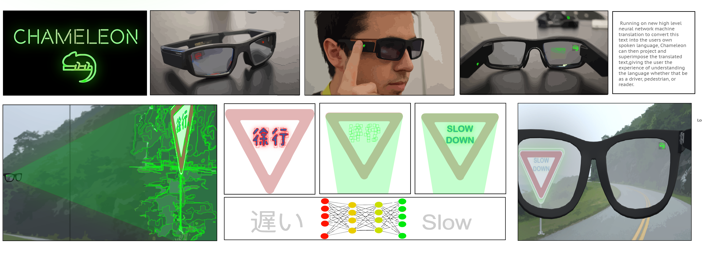

How it Works
David just moved to Japan from Canada and does not speak Japanese. He started using Chameleon with his AR equipped glasses when he first started feeling overwhelmed and lost in the city. He realized that in dated means of translation, such as Google Translate, is not only ineffective and cumbersome but is impractical for most everyday situations where he needs information quickly. Specifically, when he is driving, using public transit, or wants to read for entertainment. David needed a solution that didn’t require him to take out his phone, open a translating app, plug in the languages to translate between, take a scan of the text, and read back the result from his phone screen. He often found himself enraged at the sub-par translated results that made little to no sense and felt constantly out of the loop. Because of its UI simplicity, requiring only launching the application in his AR galsses, David does not have to be distracted or pause to scans text.
Instead Chameleon does all of the work, Using SLAM to detect and determine text in a foreign language in his line of sight, Chameleon target pixels where foreign text is detected and projects an image on top that covers these pixels with the background it appears on. Simultaneously, Chameleon ueses its deep-learning neural network machine translation to convert this text into David's own spoken language and superimpose the translated text on-top of foreign text, giving David the experience of reading in his own language. By making a multifaceted and highly complex translation job look and feel as easy as reading from sight, Chameleon has allowed David to safely drive in and navigate a new city while gaining greater insight to his environment allowing him to read sings, posters, and any piece of written information he encounters.